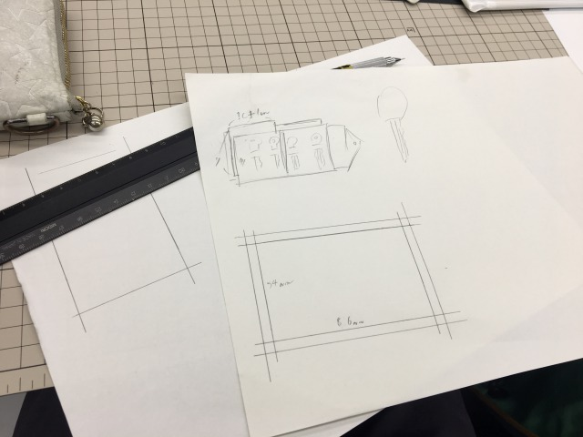
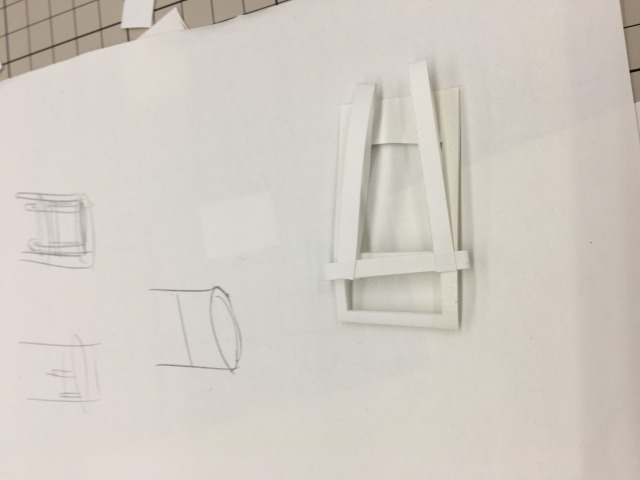
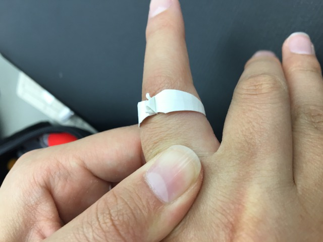
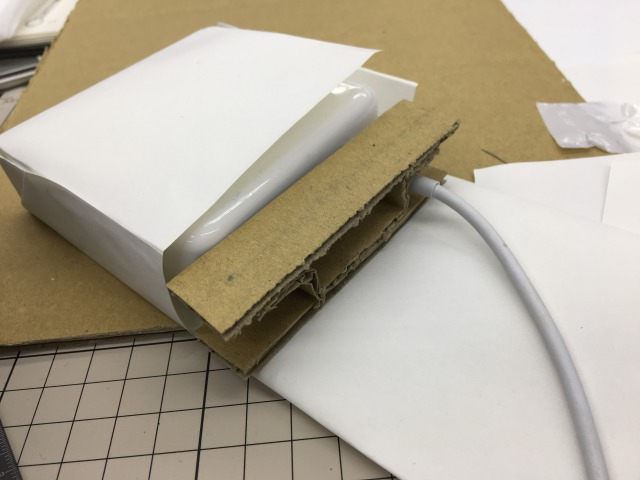
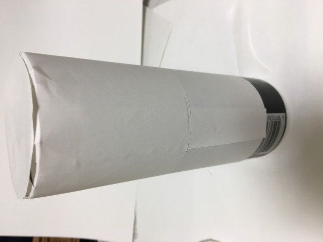

課題説明
10個のアイテムを設定する。試作してパチモン作ってモノホン作って売る。ざっくり言うとそんな授業らしい。
10個のアイテムは筆箱・財布・キーケース・タオルホルダー・水筒入れ・蓋つき缶ケース・チャージャーケース・指輪・イヤリング・ブレスレットで考えた。
更新履歴とか見るらしいので追記部分はわかりやすいように残して行こうと思う。
item1:キーケース

設計で終わった。思ったより十分は短かった。
サイフの設計のノリでやってたら間に合わない。次は設計しながら作ろうと思った。
item2:タオルホルダー

ベルトみたいな機構でタオルをカバンの横にぶら下げてくれるやつを作ろうとした。紙で機構だけ。
設計が甘過ぎて挟むことはできても多分、挟み続けることは出来ないであろう代物が出来た。
Q：どんな時に使うモノ？？/A:…マラソンの時とか？？
item3:指輪

確実に時間内に作れるモノとして作れる指輪を作った。菱形の紙の長い方を翼にして、リング状に繋げただけのもの。
デフォ鶴だと翼の付け根と接地部分の間がリングの内側に出っ張ることになるので、今度は折り羽鶴の変則型で折って見ようと思う。…紙が菱形の時点で十分変則だけど。
Q：材質は？？/A:プラスチックシートか金属板とか。金属使うなら金属折り紙みたいに四辺の中央に切れ込み入れることになると思う。
item4:チャージャーケース

前のmacチャージャーに付いてたコード巻く用の爪が消えてたので。
材質は皮と、木orプラスチックで巻き取り部分を作ろうと思う。
Q：それでいいのでは？？/A:使い辛かったし、小さく巻いてコードにも悪そうだったので今度は巻き取り部分をもうちょい大きく取ろうと思う。
item5:蓋つき缶ケース

缶ジュースがすぐ温くなるし蓋が無くて携帯し辛いので。
Q：規格とか大丈夫？？/A:高さ以外はどれもあんま変わらない（外形はφ53.0とφ66.0の二種類）から大丈夫でしょ、多分。
item6:筆箱
こっから試作品なし
筆箱の、ハサミとか入れても穴が開かない奴が欲しいと思った。
需要に疑問あり
item7:イヤリング
宝石がわりに適当な何かを付けるとか。
装飾の選択肢が広過ぎて困るかも知れない。
item8:ブレスレット
基本的にイヤリングと同じ
こっちは指輪と同様、接触部分の手触り、アレルギーなどに注意。
item9:財布
財布。
五十円と百円の見分けがつく小銭入れ部分とか、札と小銭を同じ口になげこめる設計とか作りたい。
item10:水筒入れ
ただの水筒入れ。元から保温機能が付いてるので装飾に拘れる。
最後
やっぱ数分で作るとか完成度低く作るとか性に合わない。